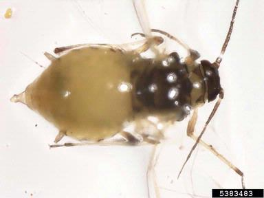

| Home |
CORIANDER |
MAJOR PESTS |
| 1. Cotton Whitefly |
MINOR PESTS |
| 1. Aphid |
| 2. Pentatomid bug |
| 3. Indigo caterpillar |
| Questions |
| Download Notes |
PEST OF CORIANDER :: MINOR PESTS ::APHID
2. Aphid: Hyadophis coriandri (Hemiptera: Aphididae)
Both nymphs and adults congregate colonise on ventral surface of leaves and suck cell sap. Due to copious production of honey dew, leaves give a glistening appearance in the beginning, but later covered with sooty mould fungus. Nymphs and adults are yellowish green. A single female produces 40 to 50 young ones and they take 8 to 12 days to mature. Life cycle is completed in 14 to 21 days during summer and 6 weeks in winter.
|  |